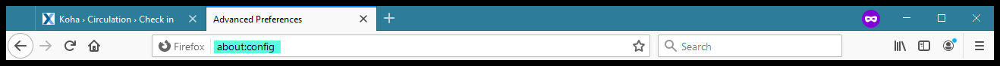
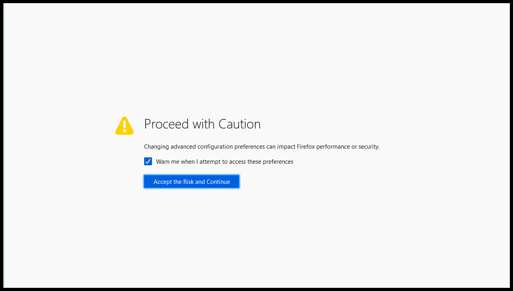
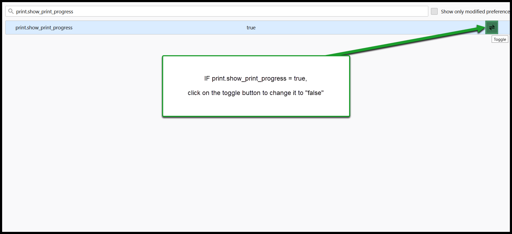
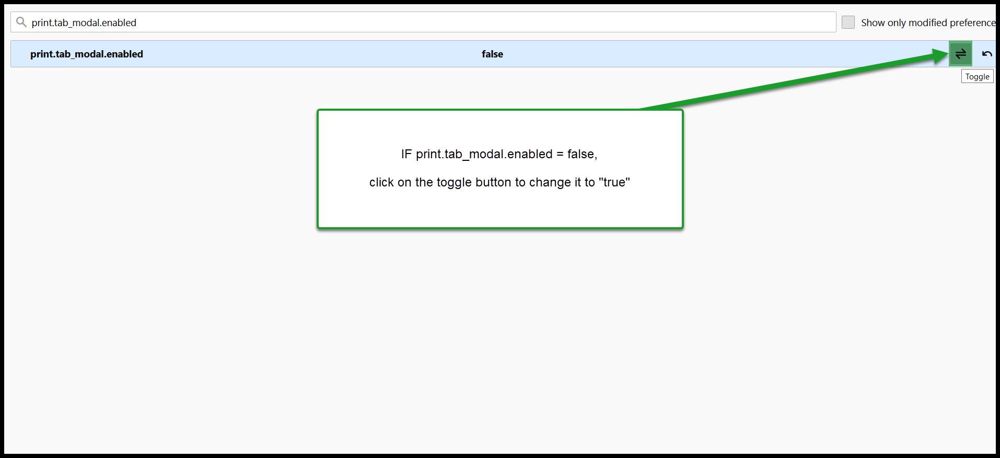
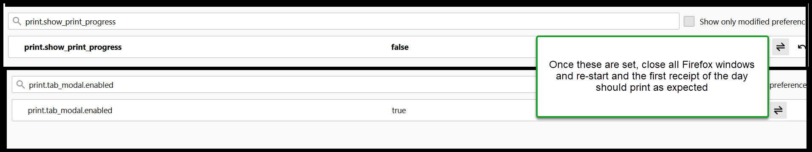

Firefox - First receipt print of the day fails¶
There is a Firefox bug that is causing some Next Search Catalog receipt printing to fail. Particularly the first print job of a Firefox browser station.
Solution:¶
Go to the address bar and type “about:config” and hit enter

Click on “Accept the Risk and Continue” when you see the security .. warning:

In the search bar type “print.show_print_progress” – If “print.show_print_progress” is set to “true,” click on the back and forth arrow to change “print.show_print_progress” from “true” to “false”

Next, in the search bar type “print.tab_modal.enabled” – If “print.tab_modal.enabled” is set to “false,” click on the back and forth arrow to change “print.tab_modal.enabled” from “false” to “true”

Once “print.show_print_progress” is set to “false” and “print.tab_modal.enabled” is set to true, close the browser

These steps should prevent print the problem with receipt print failures on the first print of the browser session.